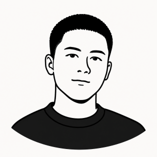

I’m Yudhistira, a Product Designer curious about how everyday products shape human behavior.
Based in Jakarta, I’m drawn to the small decisions inside a product, like a default, a label, or a moment of friction. That curiosity guides my work on monetization and growth: helping products create value for the business and for the people using them.
About me